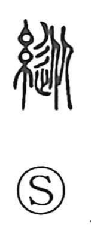

縦

Uncategorized
Kun: tate, yurusu, hoshiimama | On: juu, shou
vertical ・ to act freely ・ self-indulgent ・ to permit ・ to allow
Explanation
This is a phono-semantic character. The original form 縱 sets the silk radical beside the phonetic 従, which depicts people aligned one behind another, following the person in front. In textile terms, such alignment corresponds to the warp, the upright or vertical threads, giving the core sense “vertical,” as seen in the pair 縦横, “vertical and horizontal.” From the idea of these axes comes an extended sense of moving without constraint—acting as one wishes, even self-indulgently—and by further extension, the sense of permitting or allowing free action.